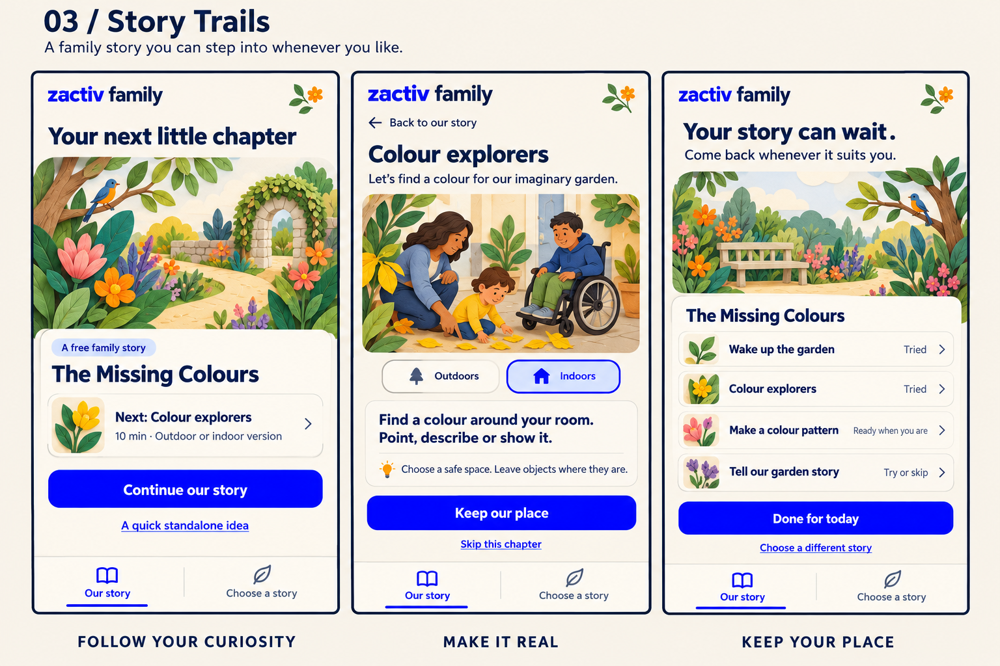

03 / Follow the curiosity
Story Trails
A small illustrated story prepares the next real-world activity. Its chapter list keeps your place indefinitely, with no pressure to finish or catch up.

Start
Continue one family story, with a standalone quick idea available when needed.
Do
A little narrative leads into clear real-world instructions and setting alternatives.
Return
Ready, tried or skipped chapters. Progress waits; nothing expires or deteriorates.